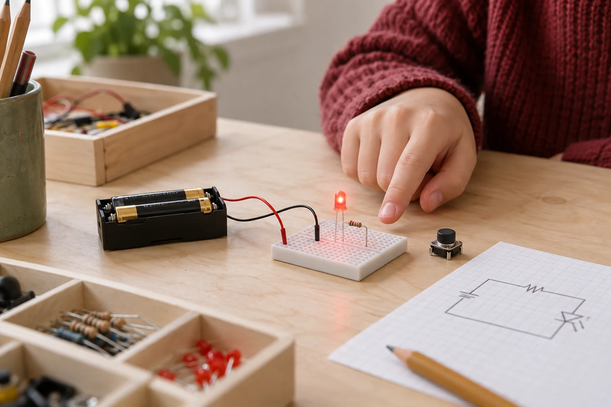

KREDSLØB
Tænd en lampe
Byg kredsløb med lamper, kontakter og modstande.
Hjælp til simulatoren
Følg de gule prikker.
De viser strømmen i simulatoren. Klik på en kontakt for at tænde eller slukke.
Dobbeltklik på en del for at ændre dens værdi. Et højreklik åbner flere valg.